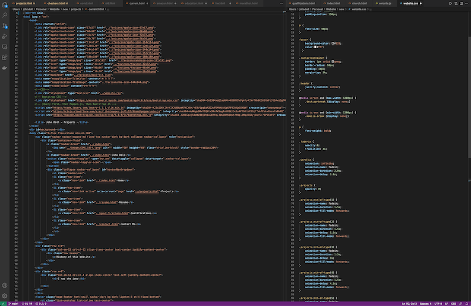
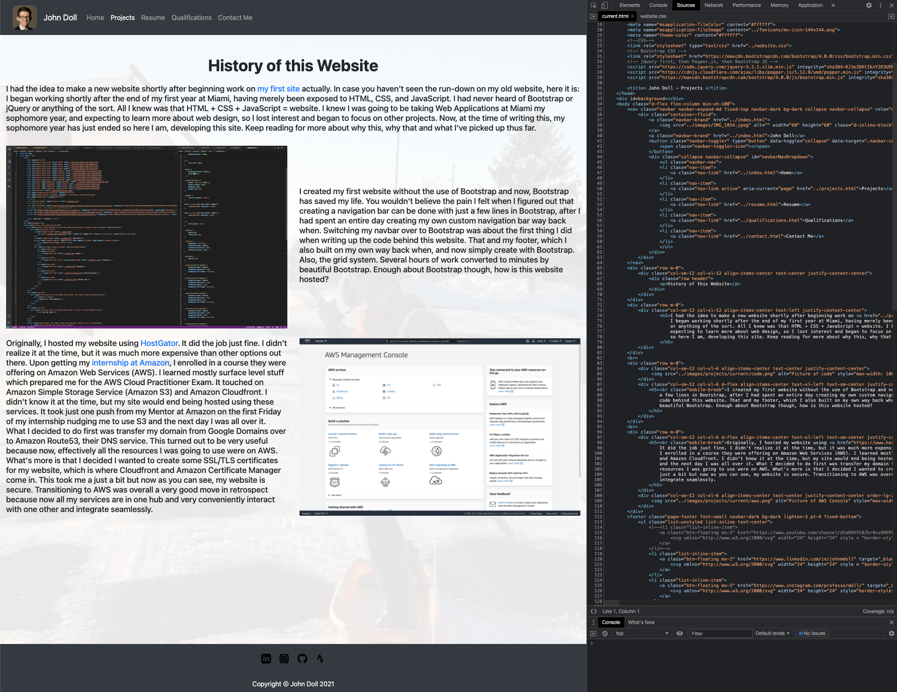

I created my first website without the use of Bootstrap and now, Bootstrap has saved my life. You wouldn't believe the pain I felt when I figured out that creating a navigation bar could be done with just
a few lines in Bootstrap, after I had spent an entire day creating my own custom navigation bar way back when. Switching the navigation bar over to Bootstrap was about the first thing I did when writing up the
code behind this website. That and my footer, which I also built on my own way back when, and now simply create with Bootstrap. Also, the grid system. Several hours of work converted to minutes by
beautiful Bootstrap. Enough about Bootstrap though, how is this website hosted?

I used a combination of the developer tab in Chrome and Visual Studio Code to do my development. I started with just the 5 webpages and slowly expanded to the
structured website I have today. At the time of writing, my website has content on the five main pages, and this is the first page outside of the original five that I have begun working
on. Once I develop every page to a satisfactory level, I'd like to go back and make enhancements and changes as I see fit. First, I want to create a good product that to your average person
looks pretty darn good. Then, I want to go back, tidy up, get rid of any existing bugs, and do some beautification, especially for the mobile end.